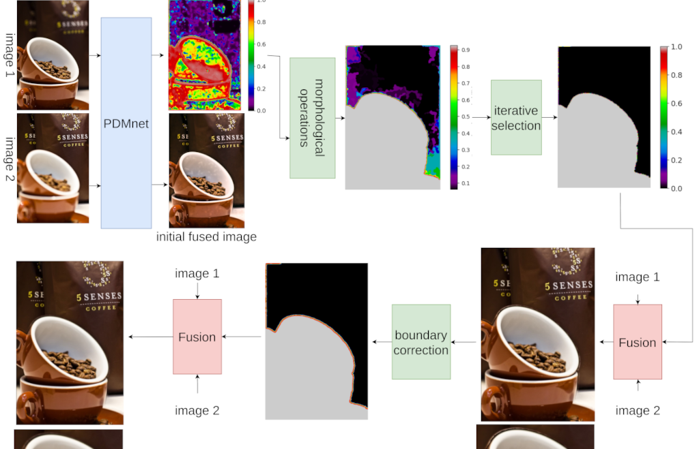

Introduction
Capturing fully focused images using a camera is often challenging due to the **defocus spread effect**, where only parts of the scene are sharp. Multi-focus image fusion addresses this by combining images of the same scene, each focused on different regions, into a single, fully focused image. This technique is crucial in fields like medical imaging, microscopy, and photography, where clarity and sharpness are vital.
Methodology
This work introduces a deep-learning-based approach to multi-focus image fusion, divided into two main stages:
- Feature Extraction and Transformation: A custom network, PDMNet, is developed to enhance performance by incorporating Discrete Wavelet Transform (DWT), capturing multi-scale and frequency-domain features.
- Image Reconstruction: The output embeddings from PDMNet are reconstructed into a single image, retaining focused details from all input images.
PDMNet Architecture:

Workflow Block Diagram:
This approach achieved a **0.061% improvement in SSIM** (Structural Similarity Index) over the state-of-the-art methods, demonstrating superior fusion quality.
Results
The performance of the proposed system is visualized below: